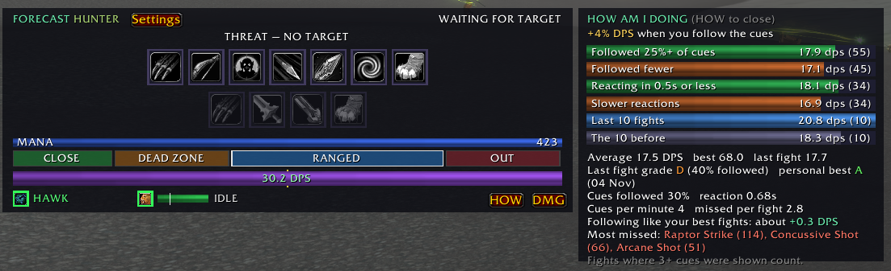
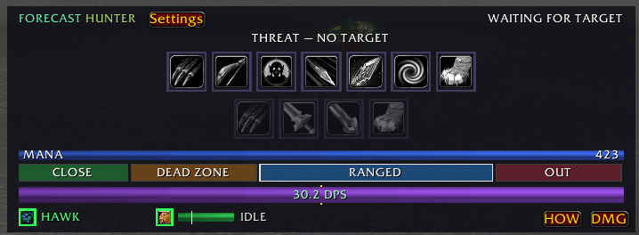
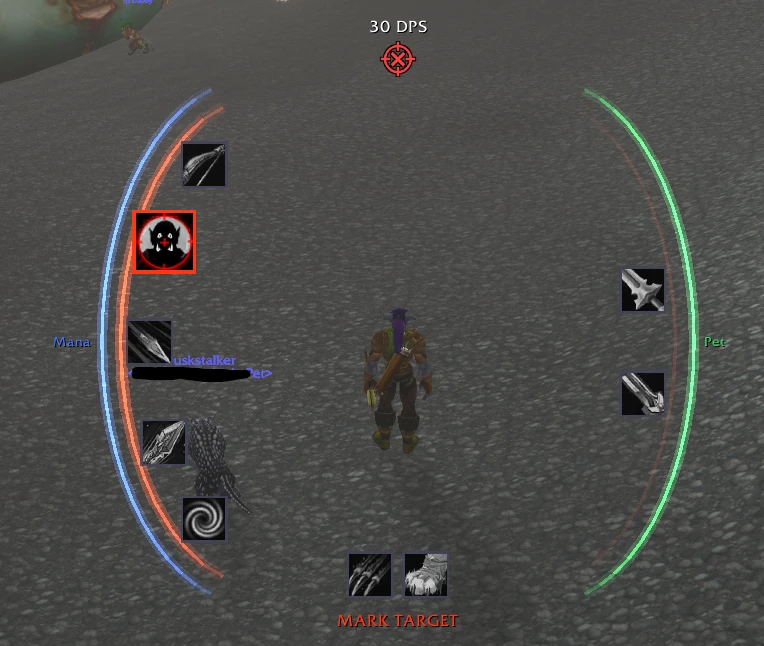
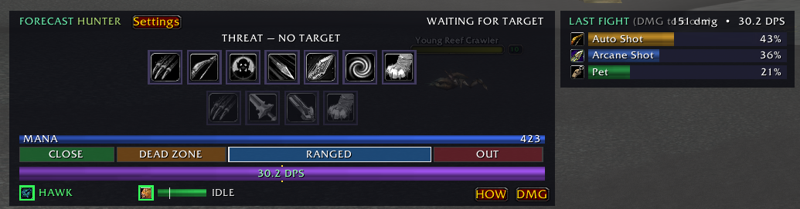
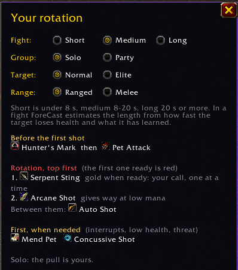

ForeCast
See your next cast before you need it. A rotation coach for every class in WoW: Forever, at every level.
Nothing matches that search.
Overview
ForeCast watches the fight and lights up the right ability at the right moment. It works out your class, race, level, trained spells and ranks, talents, form or stance, pet and group by itself, from level 1 to the cap.
It never casts anything on its own. It shows you what to press, and the icons are clickable buttons if you want to click them.

Installing
Install from CurseForge, or unzip ForeCast-x.y.z.zip into your game's Interface\AddOns folder so you have Interface\AddOns\ForeCast\ForeCast.toc. Log in, and the HUD appears. Type /fc for settings.
Settings are saved per character.
The three colors
The icon grows with a bold red border. It turns red inside your spell queue window, so your press fires the instant the ability is ready.
The ability that turns red next, with a countdown. Reactive abilities (Overpower, Revenge, Riposte) show green "press if it lights up".
Let Auto Shot land, let your wand shoot, or hold your damage for threat. Gold borders also mark big cooldowns that are ready.
The HUD
The main ForeCast window. Drag it by its title strip, or lock it in settings.

Icon rows
Two rows of clickable icons by default. For hunters, the top row is ranged and the bottom row melee, and only the row for your current range is live. For other classes, attacks are on top and defense, healing and buffs below. Turn off Two rows of clickable buttons for one compact row. Heals and self-buffs cast on you even with an enemy targeted.
Auto Shot, Attack and wand Shoot are on the bar too, shown with your weapon's picture. Clicking them starts them and never switches them off.
Cue text and NEXT
The line at the top right says what to do in words, such as CAST ARCANE SHOT, GET READY: SERPENT STING 1.2s, LET THE TANK PULL or WAITING FOR TARGET. Show the next two spells above the HUD adds a NEXT strip.
Range band
Colored blocks for each range zone, with the one you're in lit. For hunters these are CLOSE, DEAD ZONE, RANGED and OUT.
Threat bar
Your threat on the target, with "AGGRO ON YOU" when the mob turns on you.
Power and DPS bars
The power bar shows mana, rage or energy. The DPS bar is the fight's running average (all damage so far divided by time in combat). The gold line on it is your average over past fights.
Class panel
Along the bottom: an indicator (aspect, stance, buffs, poisons or armor, depending on class) and a unit panel (your pet or demon, or your health with your heal threshold). Each can be turned off in settings.
Size, look and visibility
- HUD size: 50–200%. It keeps its center where you put it.
- Icons only: hides everything but the icon rows, so the HUD becomes a button bar. Right-click it for settings.
- Look: Modern (flat) or Classic WoW (Blizzard's dialog and tooltip artwork).
- Background opacity, border thickness (0 = no border) and border color (any color, or your class color).
- Out of combat: Show, Fade or Hide the HUD.
The combat halo new in 0.7
Glowing arcs around your character, so your eyes stay on your character and the red comes up at the edge of your vision. Turn it on under Settings › Halo or with /fc halo. It shows whenever a living enemy is targeted. With Halo when idle above 0%, it also stays on screen, faded to that opacity, when nothing is targeted.

Arcs
Only the arc on the side of the suggested spell lights up. It pulses red when it's time to press, fills up in green as the next spell comes off cooldown, and stays gold while you should wait.
Spells on the halo
| Layout | What you see |
|---|---|
| All around the ring | Every rotation spell, half on each side. |
| Ranged left, melee right | The hunter default. Spells in both rows (pet, defense, big cooldowns) sit once, in a row along the bottom. |
| One icon below | Just the spell to press, under your feet, with ready big cooldowns in a row above your head. |
The suggested spell is full color and bigger, and ready big cooldowns turn gold. How visible the other spells are is up to you: the Other spells slider goes from 0% (hidden until suggested) to 100% (always fully visible, in full color). The default is 22%.
Clicking
In the ring layouts each icon can be clicked to cast it in combat (Click the spells on the halo). Out of combat, and when your target is dead, nothing on the halo catches your clicks, so you can loot and target through it.
Readouts
With these the halo can stand in for the window:
- Power ring around the left arc (mana, rage or energy): a glowing line that fills from the bottom.
- Pet health ring around the right arc (your own health if you have no pet). Both stay live in combat even though Forever hides the numbers.
- Stats above the halo:
ON YOU, DPS and threat. When the fight ends, its DPS stays there for a few seconds, then fades out. - Range icon at the top center, under the stats: in range, in melee, too far away (or in a hunter's dead zone). Casters can cast in melee too, so theirs stays a reticle up close.
- FLEEING! in red above the stats when your target runs away at low health.
Placing it
Sliders for halo size, width (how far apart the two sides are), height, curve (from 100% round arcs down to 0%, two straight upright columns), icon size, opacity and idle opacity. Width and height change only their own direction; the halo only grows past them when the icons need the room. Icons and text never overlap at any setting. Untick Lock halo position and drag it. Reset halo position puts it back around your character. Halo only hides the ForeCast window entirely; settings stay on the minimap button and /fc.
Fight recap (DMG)

When a fight ends, a tile pops up beside the HUD for a few seconds. It shows your damage split by spell (and pet) as bars, with the fight's total and average DPS. The DMG button opens the last fight any time, as does /fc recap.
Live damage: during a fight, DMG shows your damage by spell as it happens. Percentages appear only after the fight, because Forever hides the numbers from addon maths in combat. The setting Live damage during every fight opens it automatically.
How am I doing (HOW)
The HOW button compares your DPS in fights where you followed the cues well against fights where you didn't, and fast reactions against slow ones, over your last 100 fights. It shows:
- DPS when you follow the cues against when you don't.
- Last fight's grade, and your personal best.
- Cues followed, your reaction time, and cues missed per fight.
- Your most missed spells.
Only fights where 3 or more cues were shown count. Set-up cues (marks, sending the pet) don't count as misses. Clear it with Reset HOW stats or /fc how reset.
Warnings and glows
Danger rating
Before you pull, your target is rated SAFE, CAREFUL, DANGER or DEADLY. The rating weighs its level against yours, elite or rare status, enemy players, and other idle mobs close by, and drops one step when you're grouped. /fc danger explains the rating.
FLEEING!
When your target runs away at low health, FLEEING! shows in red on the HUD and the halo for a few seconds, with the Fleeing sound. Other mobs running don't count.
LOW HEALTH warning
Below your threshold (35% by default, /fc lowhp <5-90>), the HUD warns you and shows your escapes that are ready, plus your best healing potion.
Glow on your own action bars
Optionally glows the suggested spell on Blizzard's action bars, so you can keep your eyes on your usual buttons.
Combat focus
Optional: in combat everything else on screen fades away and only ForeCast shows. It all comes back when combat ends. Your keybinds keep working, and name plates and the game world aren't touched.
Minimap button
On by default. Click it to open settings, drag it around the minimap, and hover it to see its name. Turn it off under Settings › HUD.
Detection and scanning
ForeCast reads your class, race, level, every trained spell and rank, talents, form or stance, pet and group. It rescans by itself whenever you learn something new. A manual scan is also available (/fc rescan).
/fc spells lists your learned spells in three groups: in the rotation, learned but not suggested (with the reason, for example "group damage: your call"), and unrecognized. /fc report prints everything that was detected.
Built for WoW: Forever
Forever hides health, mana and cooldowns from addons during combat. ForeCast works around that:
- Cooldown prediction: cooldowns are predicted from your own casts, and the real numbers are learned out of combat.
- Combo points, forms and DoTs are tracked from your casts when the game hides them.
- Heals still light up: below your threshold the game itself fades your heal in as the red cue, even while it hides your health.
- Reactive abilities (Overpower, Revenge, Riposte) show "press if it lights up", because the dodge or parry that enables them is hidden.
- Mana is estimated from what your spells cost while it is hidden. A
~in front of the number means it's an estimate.
Mana plans
Choose how ForeCast spends your mana (Settings › Rotation, or /fc mana):
| Plan | What it does |
|---|---|
| Spend freely | Casts whenever it's worth it. Best when you drink between pulls anyway. |
| Balanced | The default. Fillers and DoTs give way to your wand or Auto Shot as mana runs low. |
| Save for the next pulls | Keeps more mana back for chain pulling. |
Out of combat with low mana, the cue tells you to drink.
Groups, threat and roles
Manage threat in groups is on by default:
- No opener before the tank pulls (
LET THE TANK PULL). - Damage turns yellow at 85% of the tank's threat, and comes back 10 points below.
- When you pull aggro, your class's threat dump lights up: Feign Death, Fade, Feint and so on.
Role (warrior, druid, paladin): Auto works it out from your stance, form or Righteous Fury, or you can force Damage or Tank. Tanks are never held back, and get a taunt cue when a mob gets loose.
Coordinate with party members who use ForeCast, QuiverShift or Smite Club. The tank gets a head start, and damage holds when the tank loses the mob. /fc group shows who is linked.
Learning from your fights
On by default, kept per character. Averages lean toward recent fights, so they follow your gear and level.
| What | How it's used |
|---|---|
| Fight length | How long each kind of mob lasts for you (elite or normal, creature type, level difference). After 5 kills of a kind, the time-to-kill estimate uses it, so DoTs and cooldowns are judged by how your fights really go. |
| Damage per cast | Each spell's damage, from the game's meter after each fight. |
| Reaction time | How long you take from a red cue to your cast. |
/fc learn shows what it has learned. /fc learn reset or Reset learning clears it.
Racials
Blood Fury and Berserking as damage cooldowns, War Stomp and Arcane Torrent as interrupts, and Stoneform and Gift of the Naaru when you're in trouble.
Any game language
ForeCast works on English, Korean, German and other clients. It matches spells, buffs, forms and creature types by their game IDs, so translated names don't matter, and clicks cast in your client's own language. Cue text is shown in English.
Hunter
Beast Mastery leveling. Ranged and melee rows switch with your range. Hunter's Mark on longer fights, Serpent Sting on any fight of 8 seconds or more (and always before you learn Arcane Shot), Arcane Shot and Concussive Shot at range, Raptor Strike and Mongoose Bite in melee, and Auto Shot weaving. Pet Attack is on the bar, with Mend Pet below your threshold. Bestial Wrath and Rapid Fire are big cooldowns. Intimidation or Feign Death are used when you pull aggro.
| Setting | Default |
|---|---|
| Mend Pet below X% pet health (slider) | 25% |
| Remind me to use Hunter's Mark on longer fights | On |
| Managed threat: Intimidation when you pull aggro | On |
| Suggest Disengage to hand aggro back to your pet | Off |
| Suggest stepping in to weave Immolation Trap at range | Off |
| Aspect indicator · Pet check (actions, health, autocast) | On |
Commands: /fc pet (what the game reports about your pet), /fc hawk <seconds> (tune Summon Hawk's lifetime).
Priest
Shadow leveling. Shadow Word: Pain, Mind Blast and Mind Flay, then your wand as mana runs low, with Shadowform. Power Word: Shield before pulls, and self-heals below your threshold.
| Setting | Default |
|---|---|
| Self-heal below X% (slider) | 40% |
| Shield yourself before each pull (Power Word: Shield) | On |
| Suggest Psychic Scream when mobs are on you and you are low | On |
Command: /fc self (what the game reports about your health, heal and wand).
Warrior
Charge opener, Victory Rush after kills, Execute, Mortal Strike, Bloodthirst or Shield Slam, Rend and Battle Shout. Tanks in Defensive Stance get Taunt, Thunder Clap, Sunder Armor, Shield Block and Revenge.
| Setting | Default |
|---|---|
| Suggest Heroic Strike with spare rage | On |
| Open with Charge | On |
| Stance indicator (and Battle Shout) | On |
Rogue
Cheap Shot or Ambush from Stealth, combo point builders, Eviscerate at 3+ points (5 on long fights), and Slice and Dice and Rupture when they pay off. Kick, Gouge and Kidney Shot interrupt. Evasion and Vanish when things go wrong, plus a poison check.
| Setting | Default |
|---|---|
| Open with Ambush instead of Cheap Shot (dagger builds) | Off |
| Use Backstab as a builder (you stand behind the target) | Off |
| Poison check and combo points indicator | On |
Mage
Armor and Arcane Intellect before the pull, then Frostbolt (or Fireball or Arcane Missiles). Ice Lance on frozen targets and with Fingers of Frost, Frost Nova when a mob reaches you, Counterspell, Ice Barrier and Ice Block, and your wand when your mana plan says to save.
| Setting | Default |
|---|---|
| Wand a slowed target between Frostbolts (saves mana) | Off |
| Buff indicator (armor, Arcane Intellect) | On |
Warlock
Summon and send your demon, then Bane of Agony, Corruption and Immolate, then your wand (or Shadow Bolt). Nightfall procs, Drain Life below your threshold, Drain Soul when you need shards, Life Tap before pulls, and a demon panel.
| Setting | Default |
|---|---|
| Drain Life below X% (slider) | 35% |
| Shadow Bolt as filler instead of the wand | Off |
| Life Tap before pulls when health is high and mana low | On |
Druid
Follows your form. Caster: Moonfire and Wrath. Solo, while the mob walks up to you, it opens with up to three hard-cast Wraths, then Moonfire once the mob is in melee range. Cat: Prowl, Shred, Rake, Claw, then Ferocious Bite or Rip. Bear: Enrage, Demoralizing Roar and Maul, and tanks automatically. Rejuvenation, Regrowth and Healing Touch below your threshold.
| Setting | Default |
|---|---|
| Heal yourself below X% (slider) | 50% |
| In Cat Form, Prowl before the pull and open with Shred | On |
| Remind me to shift into my fighting form before pulls | On |
| Buff indicator (Mark of the Wild, Thorns) | On |
Paladin
Keeps the right Seal up: Command with a slow weapon (3.8 s or more), Righteousness otherwise. Holy Strike and Judgement on cooldown, Exorcism on undead and demons, Hammer of Wrath, and Flash of Light or Holy Light below your threshold. Tanks with Righteous Fury.
| Setting | Default |
|---|---|
| Heal yourself below X% (slider) | 40% |
| Buff indicator (blessing, aura, Righteous Fury) · Health and seal panel | On |
Shaman
Lightning Shield and a weapon imbue before the pull, Searing Totem, a Flame Shock pull, Stormstrike into Earth Shock, Lightning Bolt on 5 Maelstrom Weapon stacks, and healing waves below your threshold.
| Setting | Default |
|---|---|
| Heal yourself below X% (slider) | 40% |
| Drop Searing Totem before the pull | On |
| Buff indicator (Lightning Shield, weapon imbue) · Health and totem panel | On |
Settings, tab by tab
Open settings with /fc, the minimap button, or by right-clicking the HUD. Drag the title to move the window; Esc closes it. It reopens on the last tab you used. The wiki address is at the bottom of the window: click the box and press Ctrl+C to copy it.
Settings are saved per character. To put them all back to the defaults, see Back to defaults.
HUD
The ForeCast window itself.
| Setting | What it does | Default |
|---|---|---|
| Class slider | Your class's safety threshold, for example Mend Pet below 25% pet health or Heal yourself below 40% health. Below it, that spell takes over the cue. Each class's value is listed in its section. | Varies |
| Show HUD | Shows or hides the window. Ticking it also turns off Halo only. | On |
| Lock HUD position | When unlocked, drag the window by its title strip. | Off |
| Icons only | Shrinks the HUD to just its button bar, with no text or bars. Right-click the bar (or type /fc) for settings. Switches when combat ends. | Off |
| Two rows of clickable buttons | Two rows of buttons you can click to cast (for example damage on top, defense below). Off: one compact row. Switches when combat ends. | On |
| Power bar | Your mana, rage or energy above the range band. | On |
| Show the next two spells (NEXT) | A small strip above the HUD with the two spells coming after the current one. | Off |
| Class indicator | Your class's reminder icon: aspect, stance, armor, buffs, poisons and combo points. | On |
| Class panel | The class panel at the bottom: pet check, health, seal, totems or demon. | On |
| Minimap button | Left-click opens settings; drag it around the minimap. | On |
| HUD size | 50–200%. Changes when combat ends. | 105% |
| Out of combat | What the HUD does when you're not fighting and have no enemy targeted: Show, Fade (30%) or Hide. | Show |
| Reset HUD position | Puts the HUD back, centered above your action bars. |
Look
| Setting | What it does | Default |
|---|---|---|
| Look | Modern (flat, dark) or Classic WoW (Blizzard-style frames). | Modern |
| Background opacity | 0–100% for the panel behind the HUD and the recap. Icons and text stay solid. Works in combat. | 100% |
| Border thickness | 0 (no border) to 8. | 1 |
| Border color | Click the swatch to open the color picker. Class color goes back to your class's color. | Class color |
| Glow on my own action bars | Also glows the suggested spell on Blizzard's action bars, so you can play from your own bars. | On |
| In combat, hide everything else | Combat focus: in combat only ForeCast shows; the rest of the UI comes back when the fight ends. | Off |
Rotation
Your class's own options come first (see the table below), then these:
| Setting | What it does | Default |
|---|---|---|
| Big cooldowns are my call | Cooldowns of a minute or more turn gold when ready, and the rotation never waits for them. Off: they come up red like any other spell. | On |
| Manage threat in groups | In a party, waits for the tank to pull and holds your damage at 85% threat (plus your class's threat dump). See Groups. | On |
| Coordinate with party members | Links with party members using ForeCast, QuiverShift or Smite Club to share the pull and threat. | On |
| Danger rating | Rates your target before you pull, from its level, type and what you've learned about it. | On |
| LOW HEALTH warning | Below the threshold (/fc lowhp, 35% by default) it shows your escapes that are ready and your best potion. | On |
| Learn from my fights | Remembers fight lengths, damage per cast and your reaction time to tune the cues. See Learning. | On |
| Mana plan | Spend freely, Balanced or Save for the next pulls. See Mana plans. | Balanced |
| Role (tanking classes) | Auto detects it, or force Damage or Tank. | Auto |
| Show my rotation | Opens the rotation viewer beside settings. See Rotation viewer. | |
| Manual scan | Rescans your spells and talents. Normally this happens on its own. | |
| Reset learning | Clears everything learned from your fights. |
Class options on this tab:
| Class | Option | Default |
|---|---|---|
| Hunter | Remind me to use Hunter's Mark on longer fights | On |
| Hunter | Managed threat: Intimidation when you pull aggro | On |
| Hunter | Suggest Disengage to hand aggro back to your pet | Off |
| Hunter | Suggest stepping in to weave Immolation Trap at range | Off |
| Priest | Shield yourself before each pull (Power Word: Shield) | On |
| Priest | Suggest Psychic Scream when mobs are on you and you are low | On |
| Warrior | Suggest Heroic Strike with spare rage | On |
| Warrior | Open with Charge | On |
| Rogue | Open with Ambush instead of Cheap Shot (dagger builds) | Off |
| Rogue | Use Backstab as a builder (you stand behind the target) | Off |
| Mage | Wand a slowed target between Frostbolts (saves mana) | Off |
| Warlock | Shadow Bolt as filler instead of the wand | Off |
| Warlock | Life Tap before pulls when health is high and mana low | On |
| Druid | In Cat Form, Prowl before the pull and open with Shred | On |
| Druid | Solo: open with up to 3 Wraths while the mob walks up, then Moonfire in melee range | On |
| Druid | Remind me to shift into my fighting form before pulls | On |
| Shaman | Drop Searing Totem before the pull | On |
Rotation viewer
ForeCast doesn't suggest the same spell every time: what comes up depends on how long the fight will be, whether you're in a party, the target and your range. The rotation viewer shows exactly that. Open it with Show my rotation on the Rotation tab, or /fc rotation. It opens beside the settings window.

Pick a fight with the buttons at the top:
- Fight: Short (under 8 seconds), Medium (8–20) or Long (20 or more). In a real fight ForeCast estimates the length from how fast the target loses health and what it has learned from your fights.
- Group: Solo or Party.
- Target: Normal or Elite.
- Range (hunters): Ranged or Melee.
The list below shows, for the spells you know:
- Before the first shot (hunters): Hunter's Mark and sending the pet.
- Opener: your class's opener for that fight, such as Pyroblast on a long fight.
- Rotation, top first: the priority order. The first spell in the list that is ready turns red. Notes say why a spell is there: fights 8 s+, gold when ready: your call (big cooldowns), one at a time (stings), gives way at low mana (fillers give way to your wand or Auto Shot when mana is low), when it lights up, finisher.
- Between them: what fires while you wait (Auto Shot, your wand or melee).
- When the moment comes: spells that wait for a proc, several targets, or a frozen or low-health target.
- First, when needed: interrupts, emergency heals and escapes, and threat tools. These jump ahead of everything else.
- A line on the pull: solo the pull is yours; in a party ForeCast waits for the tank and holds your damage at 85% threat.
Example, a level 30 mage: a short fight is just Frostbolt. A long fight opens with Pyroblast and adds Arcane Power and Combustion. Ice Lance comes up on a frozen target and Fire Blast on a low one, Counterspell on a cast, and Ice Block or Frost Nova when a mob reaches you.
Spells
Every spell you know that ForeCast uses, alphabetically, each with a checkbox (Auto Shot and auto attack aren't listed). Untick a spell and ForeCast ignores it completely: it is never suggested, and it leaves the HUD buttons and the halo. Tick it again and it comes back. Suggestions change at once; the click buttons change when combat ends, because the game locks them in combat. Use every spell again ticks them all. Spells you learn later show up the next time you open the tab.
Damage
| Setting | What it does | Default |
|---|---|---|
| Session-average DPS bar | The DPS bar on the HUD: your average for this session against your benchmark (the gold line). | On |
| Damage recap after each fight | A tile that pops up for a few seconds after a fight with your damage by spell. See Fight recap. | On |
| Live damage during every fight | Opens the DMG window by itself in combat. The DMG button on the HUD switches it too. | On |
| Reset DPS benchmark | Clears your average, best and the gold line. | |
| Reset HOW stats | Clears the HOW history. See HOW. |
Sounds
One checkbox per sound (ticking one plays it), plus the sound channel: Master, Sound effects or Dialog. The list is under Sounds.
Halo
The halo shows while this tab is open, so you can see each change.
| Setting | What it does | Default |
|---|---|---|
| Halo around my character | Turns the halo on. It shows when you target a living enemy. | Off |
| Lock halo position | Untick to drag the halo; it stays on screen while unlocked. | On |
| Halo only | Hides the ForeCast window and turns the halo on. Settings stay on the minimap button and /fc. | Off |
| Click the spells on the halo | The ring icons cast their spell when clicked in combat. Grayed out in the one-icon layout. | On |
| Halo spells (layout) | All around the ring, Ranged left, melee right (shared spells along the bottom), or One icon below. | Split (hunter), ring (others) |
| Reset halo position | Back around your character. | |
| Halo size | 50–200%, everything together. | 100% |
| Halo width | 50–250%: how far apart the left and right sides are. | 100% |
| Halo height | 50–250%: how tall the sides are. | 100% |
| Halo curve | 100% gives round arcs; lower straightens them, down to two upright columns at 0%. | 100% |
| Halo icon size | 50–200% for the spell icons on the halo. | 100% |
| Other spells | How visible the spells that aren't suggested are: 0% hidden until suggested, 100% always fully visible in full color. | 22% |
| Halo opacity | 10–100% for the whole halo. | 100% |
| Halo when idle | Opacity with no enemy targeted. 0 hides it; more keeps it on screen, faded. | Hidden |
| Power ring | Mana, rage or energy as a glowing line around the left arc. | On |
| Pet health ring | Your pet's health around the right arc (your own with no pet). | On |
| Range icon | At the top center: reticle in range, crossed swords in melee, X too far away or in a hunter's dead zone. | On |
| Stats | ON YOU, DPS and threat above the halo. The fight's DPS stays a few seconds after combat, then fades. | On |
No size, width, height, curve or icon setting makes icons or text overlap: the halo grows a little when the icons need room.
Back to defaults
Type /fc defaults to see what it does, then /fc defaults yes. Every ForeCast setting on that character goes back to its default and the UI reloads. Positions, ignored spells and sounds are reset too. Your learning, DPS history and HOW stats are kept.
To wipe everything, including the history: log out, then delete ForeCast.lua (and ForeCast.lua.bak) from World of Warcraft\_forever_\WTF\Account\<account>\<server>\<character>\SavedVariables\.
Sounds
Original sound cues made for ForeCast (no game audio). Each plays once when its event starts. Turning one on in settings plays it, and you can choose the channel (Master, Sound effects or Dialog).
| Sound | When | Default |
|---|---|---|
| Interrupt | Your target starts a cast you can interrupt | On |
| Aggro | A mob turns on you after the first seconds of a pull, or gets loose when you tank | Off |
| Proc | Nightfall, Hot Streak, Missile Barrage, 5 Maelstrom Weapon stacks | On |
| Pet down | Your pet or demon dies in a fight | On |
| Fleeing | Your target runs away at low health | On |
| Practice tick | A soft tick on every new red cue | Off |
Test one with /fc sound interrupt (or aggro, proc, petdown, flee, tick).
Slash commands
/fc and /forecast work the same.
| Command | What it does |
|---|---|
/fc | Open or close settings (also /fc config, /fc settings) |
/fc help | List the commands |
/fc report | Everything ForeCast detected: paste this into bug reports |
/fc spells | Learned spells: in the rotation, not suggested (with the reason), unrecognized |
/fc rescan | Rescan spells and talents (normally automatic) |
/fc range | Raw range checks for your target |
/fc recap | Show the last fight's damage breakdown |
/fc meter | What the game's damage meter reports |
/fc dps | DPS source, last readable DPS and best |
/fc how · /fc how reset | Open the HOW window · clear its statistics |
/fc learn · /fc learn reset | What's been learned · clear it |
/fc mana spend|balanced|save | Set the mana plan (no word: show it and your mana) |
/fc danger | Your target's danger rating and why |
/fc lowhp <5-90> | LOW HEALTH warning threshold |
/fc group | Party members linked through coordination |
/fc sound <name> | Test a sound: interrupt, aggro, proc, petdown, flee, tick |
/fc scale <50-200> | HUD size (also /fc size) |
/fc halo | Halo on or off |
/fc halo <50-200> · /fc halo reset | Halo size · move it back around your character |
/fc lock · /fc unlock | Lock or unlock the HUD |
/fc show · /fc hide | Show or hide the HUD |
/fc log on|off|clear | Beta log of cues and casts, saved to SavedVariables |
/fc rotation | Open the rotation viewer |
/fc version | The installed version |
/fc defaults · /fc defaults yes | Explain · put every setting back to its default and reload (history is kept) |
/fc talentdebug · /fc talentnodes | Talent detection details |
/fc pet · /fc hawk <s> | Hunter only: pet report · Summon Hawk lifetime |
/fc self | Priest only: health, heal and wand report |
Reporting a bug
- Type
/fc log on, play a few pulls, then/reloador log out. - Send the
/fc reportoutput plus the log file:WTF\Account\<ACCOUNT>\<Realm>\<Character>\SavedVariables\ForeCast.luain your game folder. - Say what ForeCast suggested and what you think it should have suggested.
Credits
Rotation priorities come from the WoW Forever leveling guides on mobalytics.gg:
- Kargoz: Hunter and Protection Warrior
- doublezug: Priest
- Mobalytics-Oli: Rogue and Mage
- Crix: Warlock
- Ruse_Cruize: Druid and Paladin
- NickTew: Enhancement Shaman
Talent data from talentsforever.com, used under CC BY 4.0. ForeCast grew out of QuiverShift (hunter) and Smite Club (priest), which continue as standalone addons on the same engine.